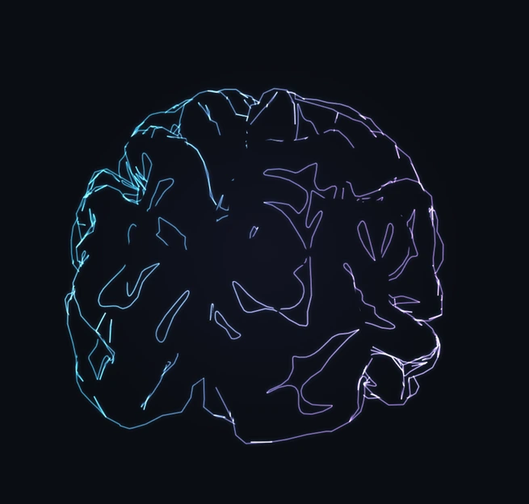

BUILDING
SYSTEMS.
SHAPING
EXPERIENCES.
Aplicaciones web, desde la interfaz
hasta la API y el modelo de datos.
React · Next.js · TypeScript · Django
Fracxion / Ragnar Suplementos / RoadLedger

Aplicaciones web, desde la interfaz
hasta la API y el modelo de datos.
React · Next.js · TypeScript · Django
